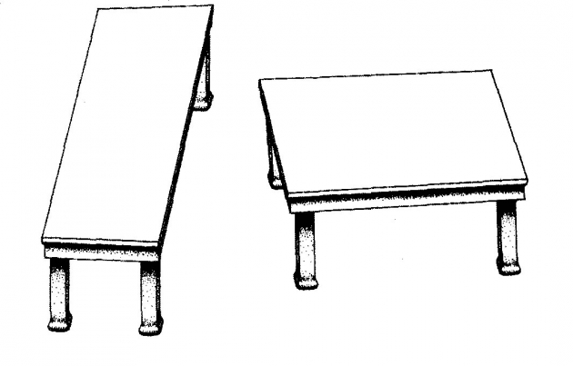
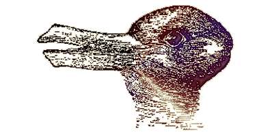
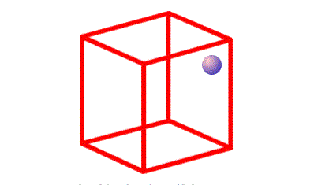

Day 2: Into the World of (ir)Rationality

What animal do you see in the image?

Is the dot on the front or in the back of the cube?

Rationality
When faced with choices, individuals choose the option which derives them the maximum possible benefit or utility.
Our Homo-Economicus solves \[ \underset{x_i^t \in X_i}{\text{max}} \sum_{t=0}^{\infty} \delta^t U(x_i^t)\] \(\delta:\) Discount Factor
\(U(\cdot):\) Utility Function
\(X:\) Set of consumption bundles
Assumptions about the agent:
has well defined preferences
unlimited willpower
purely self-interested
can make optimal choices given their preferences
- unlimited cognitive abilities
Possible relaxations of standard model to accommodate humans:
Bounded Willpower
- Time preferences: \(\delta\) might not be stable
- Risk preferences: \(U(x_i|r)\) outcomes compared to some reference point \(r\)
Bounded self-interest
- Social preferences: \(U(x_i, x_{-i})\) agents care about others’ outcomes \(x_{-i}\)
Bounded Rationality
- Limited attention, sensitivity to framing, reliance on heuristics
Bounded Willpower
“Even when given an understanding of the optimal choice, people will often still preferentially choose whatever brings the most short-term benefit over incremental progress toward a long-term goal.”1
Examples: procrastination (“will start tomorrow”), smoking
Time discounting
We value the future less than the present. Conversely, we tend to overweight the present compared to any period in the future, i.e. we are “present-biased”.
Example: Saving decisions
Would you rather take £110 in 35 days over £100 in 30 days?
What about taking £100 now over £110 given 5 days later?
Bounded Self-interest
“People are often willing to choose a less-optimal outcome for themselves if it means they can support others.”2
They care, or act as if they care, about others, even strangers, in some circumstances.
Examples: charity donations, volunteering
Framing Effects
Tversky & Kahneman (1981)
Imagine that the U.S. is preparing for the outbreak of an unusual Asian disease, which is expected to kill 600 people. Two alternative programs to combat the disease have been proposed. Assume that the exact scientific estimate of the consequences of the programs are as follows:
Program A: 200 people will be saved
Program B: \(1/3\) probability 600 will be saved, \(2/3\) probability that no people will be saved
72 percent choose Program A and 28 percent choose Program B [N=152]
Program C: 400 people will die
Program D: \(1/3\) probability nobody will die, \(2/3\) probability that 600 people will die
22 percent choose Program C and 78 percent choose Program D [N=155]
CAVEATS!
Adding non-standard assumptions does not imply an abandoning of traditional methods
Despite limits to their empirical validity and applicability, they are sometimes appropriate (even if not exactly right)
Old models get certain things wrong but they also get many things right
Our goal is to integrate behavioural economics into mainstream economics
Expected Utility Theory
Consider the following bet. A fair coin is tossed, if it lands on heads I pay you 10 pounds. However, if it lands on tails you have to pay me 10 pounds. What is your expected payoff
from playing in this bet? -
\[ \begin{align*} \text{Expected Value} &= Pr(Heads) * Payoff(Heads) + \\ & Pr(Tails) * Payoff(Tails) \\ &= 0.5 * 10 + 0.5 * (-10) = 0 \end{align*} \]
We want start thinking about how people make decisions about uncertain outcomes and we do that using lotteries. Each lottery has to specify three elements:
events
the probability of those events and
payoffs associated with those events
Expected Utility Theory is a reformulation of our earlier result for uncertain outcomes.
It states that when faced with risky prospects, agents choose with the prospect which maximizes their expected utility.
Back to framing effects